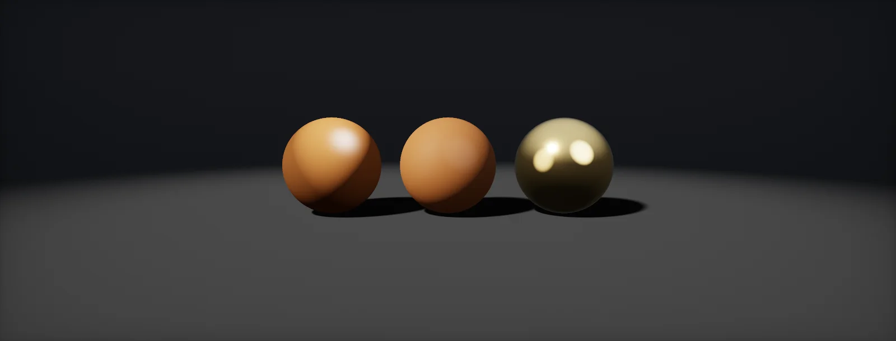

PBR Terminology
Why one material input has five names, what each name meant when it was coined, and how to translate maps and values between renderers, with OpenPBR as the reference and the conversion built in Unity HDRP and Unreal.

Name overview
Open a material in four programs and the first input is called four things: Diffuse in an old engine, Albedo in Unity's built-in Standard shader, Base Color in Unreal, Substance and Blender, base_color in OpenPBR. They are not quite synonyms. Each name comes from a period with its own idea of what the number means, and the meaning changed twice:
- Diffuse: how a texture looked on screen, lighting included (next chapter).
- Albedo: how much light the surface sends back, a physical fraction with no lighting in it (albedo).
- Base colour: albedo for non-metals and the reflection colour for metals, one map for both (base colour).
The same happens to every other input. This table translates the most common ones. Read it by row: each row is one physical property under its local names.
| What it describes | OpenPBR | glTF 2.0 | Unity HDRP Lit | Unreal | Blender | Old spec/gloss |
|---|---|---|---|---|---|---|
| Colour of the surface | base_color × base_weight | baseColor | Base Map | Base Color Substrate: Diffuse Albedo, F0 | Base Color | Diffuse (non-metals), Specular (metals) |
| Metal or not | base_metalness | metallic (B of metallicRoughness) | Metallic (R of Mask Map) | Metallic | Metallic | none: hidden in the specular colour |
| Blur of reflections | specular_roughness | roughness (G of metallicRoughness) | Smoothness = 1 − roughness (A of Mask Map) | Roughness | Roughness | Glossiness = 1 − roughness |
| Strength of a non-metal reflection | specular_ior (1.5), specular_weight | KHR_materials_ior, KHR_materials_specular | fixed F0 0.04 (Specular Color type for others) | Specular (0.5 = F0 0.04) | IOR, Specular IOR Level | Specular colour |
| Small shapes | geometry_normal | normalTexture | Normal Map | Normal | Normal | Normal |
| Hidden from ambient light | none: the renderer computes it | occlusionTexture (R) | G of Mask Map | Ambient Occlusion | none: the renderer computes it | AO |
| See-through | transmission_weight, geometry_opacity | KHR_materials_transmission, alpha | Surface Type Transparent, Alpha, Refraction Model | Opacity, Translucent blend mode | Transmission Weight, Alpha | Opacity |
This unit uses names as the reference, because OpenPBR is written to be renderer-neutral and documents what each parameter means physically. Engines then map onto it.
Diffuse
Real-time shading started with the model (1975) and Blinn's variant (1977). It has two independent colours: a diffuse colour scaled by how much the surface faces the light, and a specular colour for a highlight whose size is set by an exponent. Nothing ties them together:
With one or two lights, no shadows from the environment and no bounce light, a texture lit only by the shader looked flat. So artists did what painters do: they painted the missing light into the diffuse map. Shadows under ledges, ambient occlusion, a soft top light, even highlights on rivets went into the texture. That map was called diffuse because it was plugged into the diffuse slot, but it held a picture of a lit surface.
The trouble shows as soon as the lighting changes. A lamp that moves, a time of day, a flashlight: the painted light stays where it was painted.
That is the core reason for the later names. A map that holds only the surface, without any light, works under every light. Modern engines still accept a map in a slot called diffuse (Substrate has a Diffuse Albedo input, glTF's old spec/gloss extension a diffuseFactor), but there it means the albedo of the next chapter.
Albedo
is Latin for whiteness. Johann Heinrich Lambert used it in 1760 for the share of light a surface sends back, and astronomers still use it for planets: the Moon sends back about 12 % of the sunlight it gets, Earth about 30 %. It is a ratio between 0 and 1, with no lighting in it.
In shading, albedo appears in the simplest physical surface, the Lambertian diffuser. Its BRDF is the albedo divided by π, which makes sure the total light sent back over all directions is exactly the albedo times the light that arrived:
When physically based shading reached games around 2010, the word moved into the engines: the map is the albedo, the fraction of light that comes back diffusely, and it must not contain light. Unity's built-in Standard shader (2015) calls its colour input Albedo for that reason. The rules in base colour ranges are albedo rules: no real non-metal reflects much less than 3 % or much more than 90 % of the light.
Strictly, albedo covers the diffuse part only. The few percent a non-metal reflects at its surface (the specular part) come on top. For metals, which have no diffuse part, an albedo map would be black, and that is where the word stops fitting.
Base colour
Metals reflect strongly and in colour, and send back nothing diffusely (why). In the spec/gloss workflow that meant a black diffuse map and a coloured specular map for gold, and a coloured diffuse map with a grey 4 % specular map for paint. Two colour maps where one would do.
Brent Burley's 2012 Disney shading model, and Unreal Engine 4 after it, replaced the pair with one and a metallic switch. For a non-metal the base colour is the albedo; for a metal it is F0, the colour of the reflection head-on. The number is the same, its meaning depends on metalness:
The name says what it is: the colour you base the material on, not a physical quantity. That is why base colour and albedo are not interchangeable in documentation. When a renderer says albedo it usually means the diffuse part only; when it says base colour it means the metalness-dependent map.
OpenPBR keeps this model and says what metalness between 0 and 1 means: the fraction of the surface area that is metal, blended linearly (metals uses that for rust and dust). Its base_weight multiplies the base colour, so a material can be darkened without editing the colour.
Roughness, smoothness, gloss and α
Roughness has the most names, because three of them are the same slider in different directions and one is what the shader really uses:
- Roughness (Unreal, OpenPBR, glTF, Blender, Substance): what you paint, 0 is a mirror. Also called perceptual roughness.
- Smoothness (Unity) and glossiness (spec/gloss): 1 − roughness.
- α (alpha): roughness squared, the width of the microfacet distribution. Squaring makes the painted value feel even; without it, most of the slider would be very rough.
- Specular power or exponent: the Phong and Blinn-Phong shininess of old materials, roughly 2 / α² − 2.
When a material looks too shiny or too dull after moving between programs, check this first: an inverted smoothness map, or a roughness stored as α, are the two common slips. A packed texture does not say which one it holds, so name the channels in the file name (packing layouts).
IOR, F0, specular and reflectance
A non-metal reflects a few percent of the light at its surface. How many is set by its (IOR), and the reflection head-on is . Every renderer has its own handle for the same value:
- IOR (OpenPBR
specular_ior, glTF KHR_materials_ior, Blender): physical, 1.5 for most plastics and glass. - F0 directly, as a grey specular colour (spec/gloss workflow).
- Specular (Unreal): F0 = 0.08 · specular, so the default 0.5 is F0 = 0.04.
- Reflectance (Filament): F0 = 0.16 · reflectance², default 0.5.
- Specular weight (OpenPBR
specular_weight, glTF KHR_materials_specular): a multiplier on top, for artistic control and for things like a dusty layer that reflects less.
Most materials are fine at the default (IOR 1.5, F0 0.04). Change it for water (1.33), gemstones and for skin or hair, which sit a little lower. Metals do not use this input at all; their reflection comes from the base colour (metal Fresnel).
Normal, bump, height, AO and cavity
The detail maps have their own naming muddle:
- Normal map: the direction the surface faces, per pixel, in tangent space, in one of two green-channel conventions (OpenGL or DirectX).
- Bump map: a greyscale height used only to tilt the shading normal, computed from its slopes. Old name, still used in offline renderers.
- Height and displacement: the same greyscale, used to move geometry (displacement, tessellation) or to fake depth (parallax).
- Ambient occlusion (AO, occlusion): how hidden a point is from ambient light. A separate input, never multiplied into the base colour (why).
- Cavity: occlusion of the tiniest crevices, from the high-poly bake, often used to dampen the specular. In Unreal, a cavity map can drive the Specular input to darken reflections in tiny cracks.
OpenPBR
is an open specification for one physically based surface, maintained by the Academy Software Foundation. It merges Autodesk Standard Surface and Adobe Standard Material, so content moves between Arnold, Substance, MaterialX-based tools and renderers that adopt it with the same look. Version 1.0 came out in 2024; this unit follows 1.1.
It describes a surface as a stack of layers, each with a weight. From the top: fuzz (a dusty sheen), coat (a clear varnish), then the base, which is a mix of metal and dielectric. The dielectric part splits further into specular reflection, then transmission, subsurface or diffuse below it. A thin film can sit on the base, and emission adds light. Light that a layer reflects does not reach the layers below:
Game engines implement simpler versions of the same stack: HDRP's Lit has a coat mask, StackLit adds a second specular lobe and iridescence; Unreal's legacy shading models pick one feature at a time, Substrate builds stacks of Slabs. The theory chapters of these units use OpenPBR names and then show where each engine stores the value.
Build it in Unity HDRP
Converting an old specular/gloss material is the practical side of this unit. The route has an offline converter that works for any renderer, the HDRP import settings for its output, and the same conversion live in a Shader Graph so you can compare it with the original while you tune. Written for Unity 6 with HDRP 17; Unity 2022 LTS works the same apart from a few renamed menu entries.
- Install Python 3 with
pip install numpy pillow. Savespecgloss_to_metalrough.pyanywhere outsideAssets. - Run it on the diffuse, specular and gloss maps of one material:
python specgloss_to_metalrough.py Crate_Diffuse.png Crate_Spec.png Crate_Gloss.png Crate --pack hdrp. It writesCrate_BaseColor.pngandCrate_MaskMap.png. - Import both into the project.
Crate_BaseColor: Texture Type Default, sRGB (Color Texture) on.Crate_MaskMap: sRGB off; it holds R metallic, G occlusion (1, none), B detail mask (0), A smoothness. - Create a material with HDRP/Lit. Assign Base Map and Mask Map, keep the Metallic and Smoothness Remapping at 0 to 1, assign the old normal map unchanged.
- For a side-by-side check, put
SpecGlossToMetalRough.hlslinAssets/Shaders/. Create the graph: in the Project window, Create > Shader Graph > HDRP > Lit Shader Graph. Open it and check the Graph Inspector > Graph Settings. Sample the old diffuse and specular maps (textures imported with sRGB on) and the gloss map (sRGB off). In the graph, add a Custom Function node. Set Type toFile, Source toSpecGlossToMetalRough.hlsland Name toSpecGlossToMetalRough(without the_floatsuffix). Add the inputs Diffuse (Vector 3), Specular (Vector 3), Gloss (Float) and the outputs BaseColor (Vector 3), Metallic (Float), Smoothness (Float), in that order and with those types: they must match the function's parameters. Connect the outputs to Base Color, Metallic and Smoothness. - Place both versions next to the original under neutral light and fixed exposure. Look at areas the heuristic gets wrong: dark metals (read as non-metal) and coloured, very bright non-metals (read as partly metal). Paint fixes into the metallic channel of the mask map.
- Open Window > Analysis > Rendering Debugger > Material and run the Material Validator on the result: converted metals that ended up too dark show at once.
"""Convert a specular/glossiness material to metal/roughness.
usage: python specgloss_to_metalrough.py diffuse.png specular.png gloss.png out_prefix [--pack hdrp|ue|none]
needs: pip install numpy pillow
The metallic value is solved with the heuristic from Khronos' glTF spec/gloss conversion sample: it is a
good guess, not a lossless conversion. Check the result next to the original under neutral light.
"""
import argparse
import numpy as np
from PIL import Image
DIELECTRIC_F0 = 0.04
def srgb_to_linear(c):
return np.where(c <= 0.04045, c / 12.92, ((c + 0.055) / 1.055) ** 2.4)
def linear_to_srgb(c):
c = np.clip(c, 0.0, 1.0)
return np.where(c <= 0.0031308, c * 12.92, 1.055 * c ** (1 / 2.4) - 0.055)
def load(path, srgb, channels='RGB'):
a = np.asarray(Image.open(path).convert(channels), dtype=np.float32) / 255.0
return srgb_to_linear(a) if srgb else a
def perceived(c):
"""Perceived brightness used by the heuristic (not luminance)."""
return np.sqrt(0.299 * c[..., 0] ** 2 + 0.587 * c[..., 1] ** 2 + 0.114 * c[..., 2] ** 2)
def solve_metallic(diffuse, specular, one_minus_spec):
a = DIELECTRIC_F0
b = diffuse * one_minus_spec / (1 - DIELECTRIC_F0) + specular - 2 * DIELECTRIC_F0
c = DIELECTRIC_F0 - specular
d = np.maximum(b * b - 4 * a * c, 0.0)
m = np.clip((-b + np.sqrt(d)) / (2 * a), 0.0, 1.0)
return np.where(specular < DIELECTRIC_F0, 0.0, m)
def convert(diffuse, specular, gloss):
"""All inputs linear. Returns base colour (linear RGB), metallic, roughness."""
one_minus = 1.0 - specular.max(axis=-1)
m = solve_metallic(perceived(diffuse), perceived(specular), one_minus)
eps = 1e-6
from_diffuse = diffuse * (one_minus / (1 - DIELECTRIC_F0) / np.maximum(1 - m, eps))[..., None]
from_specular = (specular - DIELECTRIC_F0 * (1 - m)[..., None]) / np.maximum(m, eps)[..., None]
t = (m * m)[..., None]
base = np.clip(from_diffuse + (from_specular - from_diffuse) * t, 0.0, 1.0)
return base, m, 1.0 - gloss
def save(path, data):
Image.fromarray(np.round(np.clip(data, 0, 1) * 255).astype(np.uint8)).save(path)
print('wrote', path)
def main():
ap = argparse.ArgumentParser()
ap.add_argument('diffuse'); ap.add_argument('specular'); ap.add_argument('gloss'); ap.add_argument('out')
ap.add_argument('--pack', choices=['hdrp', 'ue', 'none'], default='none')
a = ap.parse_args()
diffuse = load(a.diffuse, srgb=True)
specular = load(a.specular, srgb=True) # specular colour maps are colour data
gloss = load(a.gloss, srgb=False, channels='L') # glossiness is plain data
if not (diffuse.shape[:2] == specular.shape[:2] == gloss.shape[:2]):
raise SystemExit('the three maps must have the same size')
base, metal, rough = convert(diffuse, specular, gloss)
save(a.out + '_BaseColor.png', linear_to_srgb(base))
one, zero = np.ones_like(metal), np.zeros_like(metal)
if a.pack == 'hdrp': # HDRP mask map: R metallic, G occlusion, B detail mask, A smoothness
Image.fromarray(np.round(np.stack([metal, one, zero, 1 - rough], -1) * 255).astype(np.uint8), 'RGBA').save(a.out + '_MaskMap.png')
print('wrote', a.out + '_MaskMap.png')
elif a.pack == 'ue': # Unreal ORM: R occlusion, G roughness, B metallic
save(a.out + '_ORM.png', np.stack([one, rough, metal], -1))
else:
save(a.out + '_Metallic.png', metal)
save(a.out + '_Roughness.png', rough)
if __name__ == '__main__':
main()#ifndef ATLAS_SPECGLOSS_INCLUDED
#define ATLAS_SPECGLOSS_INCLUDED
// Specular/glossiness to metal/roughness, live in a graph. Inputs are linear: sample the diffuse and
// specular maps with sRGB on, the gloss map with sRGB off. Heuristic, see the unit.
float Atlas_Perceived(float3 c) { return sqrt(dot(c * c, float3(0.299, 0.587, 0.114))); }
void SpecGlossToMetalRough_float(float3 Diffuse, float3 Specular, float Gloss,
out float3 BaseColor, out float Metallic, out float Smoothness)
{
const float d0 = 0.04; // F0 of a typical dielectric
float pd = Atlas_Perceived(Diffuse);
float ps = Atlas_Perceived(Specular);
float oneMinusSpec = 1.0 - max(Specular.r, max(Specular.g, Specular.b));
float b = pd * oneMinusSpec / (1.0 - d0) + ps - 2.0 * d0;
float c = d0 - ps;
float D = max(b * b - 4.0 * d0 * c, 0.0);
float m = ps < d0 ? 0.0 : saturate((-b + sqrt(D)) / (2.0 * d0));
float3 fromDiffuse = Diffuse * (oneMinusSpec / (1.0 - d0) / max(1.0 - m, 1e-4));
float3 fromSpecular = (Specular - d0 * (1.0 - m)) / max(m, 1e-4);
BaseColor = saturate(lerp(fromDiffuse, fromSpecular, m * m));
Metallic = m;
Smoothness = Gloss; // Unity smoothness is glossiness; roughness = 1 - gloss
}
#endifglTF files can skip the heuristic: with the KHR_materials_specular and KHR_materials_ior extensions, a converter can keep metallic at 0 and store the old specular colour directly, which is lossless. glTF Transform's metalRough() does this.
--pack hdrp and ignore G and B), and the same Custom Function works in a URP Lit graph.Build it in Unreal Engine
The same converter writes Unreal's usual ORM packing. The chapter wires the result into a material, shows the conversion live in a Material Function, and maps the names onto Substrate, which describes materials with diffuse albedo, F0 and F90 instead of base colour and metallic. Written for Unreal Engine 5.6 and later. Substrate is production-ready from 5.7; check Project Settings > Rendering > Substrate to see which material model a project uses.
- Run the converter with
--pack ue:python specgloss_to_metalrough.py Crate_Diffuse.png Crate_Spec.png Crate_Gloss.png T_Crate --pack ue. It writesT_Crate_BaseColor.pngandT_Crate_ORM.png(R occlusion, G roughness, B metallic). - Import both. Open
T_Crate_ORMand set Compression Settings toMasks (no sRGB), which also turns sRGB off. KeepT_Crate_BaseColoratDefaultwith sRGB on. - Create a material. Connect
T_Crate_BaseColorRGB to Base Color. SampleT_Crate_ORMonce (Sampler TypeMasks) and connect R to Ambient Occlusion, G to Roughness, B to Metallic. Leave Specular unconnected: its default 0.5 means F0 = 0.04. - For a live comparison, create a Material Function
MF_SpecGlossToMetalRoughwith three Function Input nodes: Diffuse (Vector 3), Specular (Vector 3), Gloss (Scalar). Add a Custom node, pasteSpecGlossToMetalRough.ushinto Code, set Output Type toCMOT Float 3, add the inputsDiffuse,Specular,Glossand the Additional OutputsMetallicandRoughness(bothCMOT Float 1). Expose the three results with Function Output nodes. - In a second material, sample the old diffuse and specular maps with Sampler Type
Colorand the gloss map withLinear Color, run them through the function and connect the outputs. Place both materials on copies of the asset in a level with neutral lighting. - With Substrate on, the legacy inputs above are converted for you. When you author a Substrate Slab BSDF directly, base colour and metallic become Diffuse Albedo and F0: the Substrate Metalness-To-DiffuseAlbedo-F0 node does that step, and F90 is the colour at grazing angles (keep it white for most materials).
"""Convert a specular/glossiness material to metal/roughness.
usage: python specgloss_to_metalrough.py diffuse.png specular.png gloss.png out_prefix [--pack hdrp|ue|none]
needs: pip install numpy pillow
The metallic value is solved with the heuristic from Khronos' glTF spec/gloss conversion sample: it is a
good guess, not a lossless conversion. Check the result next to the original under neutral light.
"""
import argparse
import numpy as np
from PIL import Image
DIELECTRIC_F0 = 0.04
def srgb_to_linear(c):
return np.where(c <= 0.04045, c / 12.92, ((c + 0.055) / 1.055) ** 2.4)
def linear_to_srgb(c):
c = np.clip(c, 0.0, 1.0)
return np.where(c <= 0.0031308, c * 12.92, 1.055 * c ** (1 / 2.4) - 0.055)
def load(path, srgb, channels='RGB'):
a = np.asarray(Image.open(path).convert(channels), dtype=np.float32) / 255.0
return srgb_to_linear(a) if srgb else a
def perceived(c):
"""Perceived brightness used by the heuristic (not luminance)."""
return np.sqrt(0.299 * c[..., 0] ** 2 + 0.587 * c[..., 1] ** 2 + 0.114 * c[..., 2] ** 2)
def solve_metallic(diffuse, specular, one_minus_spec):
a = DIELECTRIC_F0
b = diffuse * one_minus_spec / (1 - DIELECTRIC_F0) + specular - 2 * DIELECTRIC_F0
c = DIELECTRIC_F0 - specular
d = np.maximum(b * b - 4 * a * c, 0.0)
m = np.clip((-b + np.sqrt(d)) / (2 * a), 0.0, 1.0)
return np.where(specular < DIELECTRIC_F0, 0.0, m)
def convert(diffuse, specular, gloss):
"""All inputs linear. Returns base colour (linear RGB), metallic, roughness."""
one_minus = 1.0 - specular.max(axis=-1)
m = solve_metallic(perceived(diffuse), perceived(specular), one_minus)
eps = 1e-6
from_diffuse = diffuse * (one_minus / (1 - DIELECTRIC_F0) / np.maximum(1 - m, eps))[..., None]
from_specular = (specular - DIELECTRIC_F0 * (1 - m)[..., None]) / np.maximum(m, eps)[..., None]
t = (m * m)[..., None]
base = np.clip(from_diffuse + (from_specular - from_diffuse) * t, 0.0, 1.0)
return base, m, 1.0 - gloss
def save(path, data):
Image.fromarray(np.round(np.clip(data, 0, 1) * 255).astype(np.uint8)).save(path)
print('wrote', path)
def main():
ap = argparse.ArgumentParser()
ap.add_argument('diffuse'); ap.add_argument('specular'); ap.add_argument('gloss'); ap.add_argument('out')
ap.add_argument('--pack', choices=['hdrp', 'ue', 'none'], default='none')
a = ap.parse_args()
diffuse = load(a.diffuse, srgb=True)
specular = load(a.specular, srgb=True) # specular colour maps are colour data
gloss = load(a.gloss, srgb=False, channels='L') # glossiness is plain data
if not (diffuse.shape[:2] == specular.shape[:2] == gloss.shape[:2]):
raise SystemExit('the three maps must have the same size')
base, metal, rough = convert(diffuse, specular, gloss)
save(a.out + '_BaseColor.png', linear_to_srgb(base))
one, zero = np.ones_like(metal), np.zeros_like(metal)
if a.pack == 'hdrp': # HDRP mask map: R metallic, G occlusion, B detail mask, A smoothness
Image.fromarray(np.round(np.stack([metal, one, zero, 1 - rough], -1) * 255).astype(np.uint8), 'RGBA').save(a.out + '_MaskMap.png')
print('wrote', a.out + '_MaskMap.png')
elif a.pack == 'ue': # Unreal ORM: R occlusion, G roughness, B metallic
save(a.out + '_ORM.png', np.stack([one, rough, metal], -1))
else:
save(a.out + '_Metallic.png', metal)
save(a.out + '_Roughness.png', rough)
if __name__ == '__main__':
main()// Custom node "SpecGlossToMetalRough". Inputs: Diffuse (float3), Specular (float3), Gloss (float). // Output Type: CMOT Float 3 (base colour). Additional Outputs: Metallic (CMOT Float 1), Roughness (CMOT Float 1). // Sample Diffuse and Specular with Sampler Type Color (sRGB on), Gloss with Linear Color or Masks. const float d0 = 0.04; float pd = sqrt(dot(Diffuse * Diffuse, float3(0.299, 0.587, 0.114))); float ps = sqrt(dot(Specular * Specular, float3(0.299, 0.587, 0.114))); float oneMinusSpec = 1.0 - max(Specular.r, max(Specular.g, Specular.b)); float b = pd * oneMinusSpec / (1.0 - d0) + ps - 2.0 * d0; float c = d0 - ps; float D = max(b * b - 4.0 * d0 * c, 0.0); float m = ps < d0 ? 0.0 : saturate((-b + sqrt(D)) / (2.0 * d0)); float3 fromDiffuse = Diffuse * (oneMinusSpec / (1.0 - d0) / max(1.0 - m, 1e-4)); float3 fromSpecular = (Specular - d0 * (1.0 - m)) / max(m, 1e-4); Metallic = m; Roughness = 1.0 - Gloss; return saturate(lerp(fromDiffuse, fromSpecular, m * m));
Unreal's Specular input (default 0.5) is not a colour: it scales the dielectric F0 as F0 = 0.08 · Specular. Old specular maps do not go there; the converter folds them into base colour and metallic.
Sources and further reading
The formulas and engine details in this unit come from these references. Engine documentation changes between versions.
- SpecOpenPBR Surface specificationAcademy Software FoundationParameter names, defaults and the layer model used as the reference here.
- PaperPhysically Based Shading at DisneyBrent Burley · SIGGRAPH 2012Where base colour and metallic as one parameter set come from.
- PaperReal Shading in Unreal Engine 4Brian Karis · SIGGRAPH 2013Base Color, Metallic, Roughness and Specular in a game engine; α = roughness².
- SpecglTF 2.0 and the KHR_materials extensionsKhronos GroupglTF names, the specular and IOR extensions, and the archived spec/gloss extension with its conversion sample.
- ArticleConverting glTF PBR materials from spec/gloss to metal/roughDon McCurdyWhy the conversion is lossless with KHR_materials_specular and KHR_materials_ior.
- DocsFilament: material parameterizationGoogleReflectance mapping F0 = 0.16 · reflectance² and the remapping of roughness.
- DocsHDRP Lit material inspector referenceUnityBase Map, Mask Map layout and the material types.
- DocsSubstrate materials overviewEpic GamesSlab inputs: Diffuse Albedo, F0, F90 and how legacy materials are converted.
- HistoryAlbedoWikipediaOrigin of the term (Lambert, 1760) and planetary albedos.